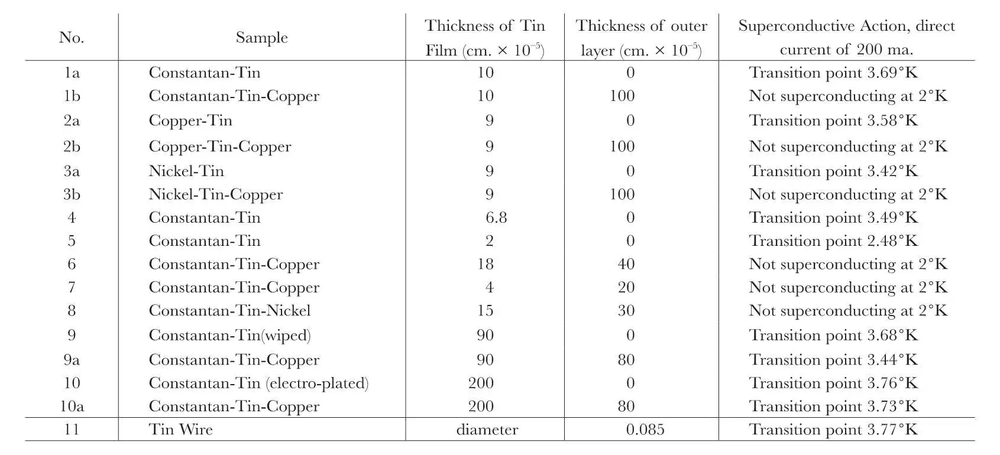

中文
中文E. F. Burton
Editor’s Note
Superconductivity had been discovered in 1911 by Heike Kamerlingh Onnes, who found that solid mercury lost its electrical resistance when cooled within a few degrees of absolute zero. Other materials such as tin and lead were soon also found to be “supraconductors”, as they were then known, but there was no explanation for the phenomenon. Here E. F. Burton of the University of Toronto reported an important constraint on such a theory: a thin film of superconducting material such as tin loses its superconductivity when sandwiched between other materials that are not superconducting. Burton notes that the effect applies only to sufficiently thin superconducting films, less than a micrometre or so thick. 中文
EXPERIMENTS on the relation of high frequency currents to the phenomenon of superconductivity led to work at Toronto with films of superconducting metals. The films (of tin) were produced by “tinning” the surface of fine wires which themselves were not superconducting: in the early experiments a coating of tin 2 × 10–4 cm. in thickness was “wiped” on constantan wire of 0.016 cm. diameter. In this way one obtains the equivalent of a thin cylinder of superconducting metal, and the resistance of the whole becomes zero below the transition temperature of the superconducting element used1. 中文
With the intention of studying further the effect of high frequency currents, samples of such coated wires were plated with other metals—for example, copper and nickel—which are not superconductors; an example of such a combination is constantan covered with tin and then plated with copper. The diameters of the wires forming the core were as follows: for constantan 0.056 cm., for copper 0.040 cm. and for nickel 0.045 cm. 中文
Preliminary experiments were carried out on these samples to confirm their reaction with respect to direct currents—the ordinary superconductivity test—and it was found that thin films of tin cease to show superconductivity when these films are themselves plated over with a film of a non-superconducting metal, for example, copper or nickel. This surprising result shows itself only with thin films, but a number of repetitions of the experiments renders the results unmistakable. The accompanying table shows the nature of the phenomenon: so far, only the superconductor tin has been tested in this way. 中文

It is seen that as the film of tin increases in thickness, a point is reached at which the superconducting property of the tin film is not lost by surface plating. This phenomenon will undoubtedly be of importance in framing a satisfactory theory of superconductivity—a consideration of utmost importance in dealing with metallic conduction. This work is being carried on by J. O. Wilhelm and A. D. Misener. 中文
(133, 459; 1934)
E. F. Burton: McLennan Laboratory, University of Toronto, Feb. 17.
Reference:
1. E. F. Burton, “Superconductivity” (University of Toronto Press, and Oxford University Press), p. 70. J. C. McLennan, Nature, 130, 879, Dec. 10, 1932.